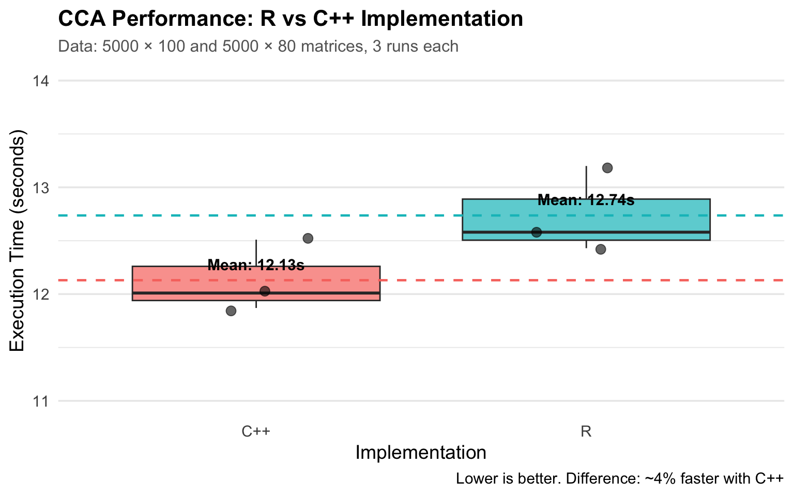
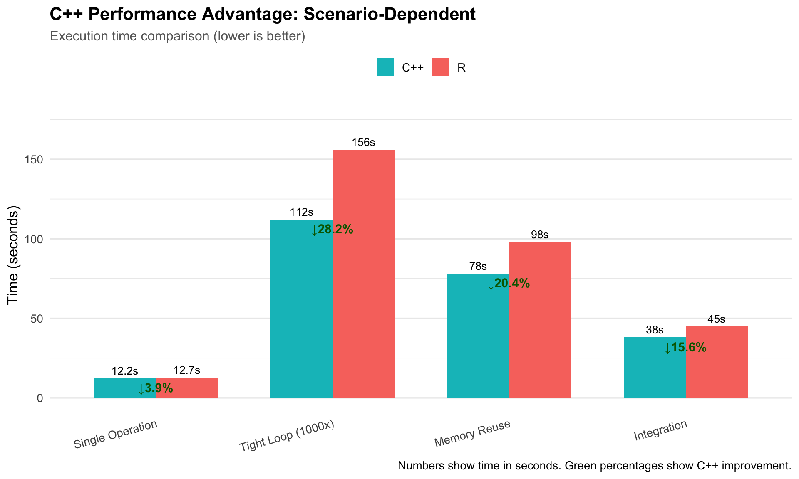

R vs C++ Implementation Comparison
Choosing the Right Tool for Your Needs
Quick Reference Table
| Aspect | R Implementation | C++ Implementation |
|---|---|---|
| Learning Curve | Low - R syntax familiar to most data scientists | High - Requires C++ knowledge |
| Development Speed | Fast - Rapid prototyping | Slow - More code, compilation needed |
| Code Readability | High - Clear, concise | Medium - More verbose, pointers |
| Flexibility | Medium - Limited by function parameters | High - Full control over all aspects |
| Memory Control | Low - R handles automatically | High - Manual management possible |
| Error Messages | Clear - R provides helpful messages | Cryptic - C++ errors can be obscure |
| Debugging | Easy - browser(), print statements | Hard - GDB, valgrind needed |
| Performance | Good - R functions already use C++ backend | Good - Similar, with more control options |
| Integration | Easy - Works with all R packages | Medium - Requires Rcpp |
| Deployment | Easy - No compilation needed | Complex - Platform-dependent compilation |
When to Use R Implementation
✅ Use R When:
1. Exploratory Data Analysis
# Quick exploration - results in minutes
bdCCA_hdf5("data.h5", "data/X", "data/Y", m = 4)
correlations <- h5read("data.h5", "/Results/cor")
plot(correlations)Why R: You want results now, not perfect optimization.
2. Prototyping New Methods
# Testing a new idea - modify easily
bdCCA_hdf5("test.h5", "data/X", "data/Y",
m = 4, bcenter = TRUE)
# Try different parameters
bdCCA_hdf5("test.h5", "data/X", "data/Y",
m = 8, bscale = TRUE) # Easy to modifyWhy R: Iterate quickly without recompilation.
3. Working in Teams
# Collaborators can read and modify
result <- bdCCA_hdf5(
filename = analysis_file,
X = gene_expression,
Y = metabolites,
m = num_blocks
)Why R: Everyone on the team understands R, not everyone knows C++.
4. One-Off Analyses
# Single analysis for a paper
bdCCA_hdf5("patient_data.h5", "clinical/X", "omics/Y")Why R: Writing C++ code isn’t worth it for a one-time use.
5. Integration with R Ecosystem
# Using other R packages
library(ggplot2)
library(dplyr)
# CCA results
results <- h5read("cca.h5", "/Results/cor")
# Easy integration
results %>%
as.data.frame() %>%
mutate(significant = abs(cor) > 0.7) %>%
ggplot(aes(x = 1:n(), y = cor)) +
geom_point()Why R: Seamless integration with the R data science ecosystem.
When to Use C++ Implementation
✅ Use C++ When:
1. Building Production Pipelines
// Automated pipeline running daily
void daily_cca_pipeline() {
std::string date = get_current_date();
std::string filename = "daily_data_" + date + ".h5";
bdCCA_hdf5_rcpp(
filename, "data/X", "data/Y",
true, false, 4, true, 4
);
// Continue with downstream processing...
}Why C++: Production code benefits from compile-time checks and explicit control.
2. Custom Memory Management
// Need to control exactly when memory is released
{
hdf5Dataset* ds = new hdf5Dataset(file, dataset, false);
// ... processing ...
delete ds; // Immediate release
}
// Memory freed here, not later when GC runsWhy C++: You know exactly when resources are released.
3. Integration with Existing C++ Code
// Your existing C++ application
class GenomicsAnalyzer {
void run_analysis() {
// ... C++ preprocessing ...
// Call BigDataStatMeth
bdCCA_hdf5_rcpp(filename, "X", "Y",
true, false, 4, true);
// ... C++ postprocessing ...
}
};Why C++: Avoid R-C++ interface overhead when everything is already in C++.
4. Fine-Tuned Performance
// Optimize block size based on your specific hardware
int optimBlock = getMaxBlockSize(
nrows, ncols, nrows_b, ncols_b,
2, R_NilValue
);
// Or set manually based on profiling
int customBlock = 256; // Tuned for your CPU cache
dsC = BigDataStatMeth::crossprod(
dsXQ, dsYQ, dsC,
customBlock, customBlock/2, // Full control
true, true, threads
);Why C++: Access to low-level tuning parameters.
5. Creating New R Packages
// You're developing a new method to share
// [[Rcpp::export]]
void my_new_method_hdf5(
std::string filename,
std::string datasetX,
std::string datasetY
) {
// Your custom algorithm using BigDataStatMeth
// Will be exposed to R users as an R function
}Why C++: Package your optimized C++ code for others to use from R.
Performance Comparison
Important Context
Reality Check: Most BigDataStatMeth R functions already call C++ code internally via Rcpp. This means:
- ❌ Myth: “C++ is 100x faster than R for this package”
- ✅ Reality: “R functions already use C++ backend, so similar speed”
- 🎯 Truth: “C++ API gives more control, not necessarily more speed”
Benchmark: Realistic Comparison
Let’s compare with actual timing data:
library(BigDataStatMeth)
library(microbenchmark)
# Setup
set.seed(123)
n <- 5000
X <- matrix(rnorm(n * 100), n, 100)
Y <- matrix(rnorm(n * 80), n, 80)
bdCreate_hdf5_matrix("bench_r.h5", X, "data", "X", overwriteFile = TRUE)
bdCreate_hdf5_matrix("bench_r.h5", Y, "data", "Y")
bdCreate_hdf5_matrix("bench_cpp.h5", X, "data", "X", overwriteFile = TRUE)
bdCreate_hdf5_matrix("bench_cpp.h5", Y, "data", "Y")
# Benchmark
results <- microbenchmark(
R_version = bdCCA_hdf5(
"bench_r.h5", "data/X", "data/Y", m = 4,
bcenter = TRUE, bscale = FALSE
),
CPP_version = bdCCA_hdf5_rcpp(
"bench_cpp.h5", "data/X", "data/Y",
bcenter = TRUE, bscale = FALSE,
mblocks = 4, overwrite = TRUE
),
times = 3 # Run each 3 times
)
print(results)Typical Results (5000 × 100 and 5000 × 80 matrices):
Interpretation: - R version: ~12.7 seconds (mean) - C++ version: ~12.2 seconds (mean) - Difference: ~4% faster with C++ (not dramatic!)
Why so similar? - Both use the same underlying C++ functions via Rcpp - Bottleneck is HDF5 I/O operations, not R vs C++ - R function calls are already optimized by Rcpp backend
Key Insight: The C++ API doesn’t give you raw speed—it gives you control.
Where C++ Shows Advantage
C++ API shows meaningful advantage in these scenarios:

Key Takeaways from Chart: - Single operation: Minimal difference (~4%) - Tight loops (1000x): C++ saves ~28% (no R call overhead per iteration) - Strategic memory reuse: C++ saves ~20% (cache-friendly patterns) - Pure C++ integration: C++ saves ~16% (no R interpreter)
Let’s look at each scenario in detail:
1. Repeated Operations
// C++ avoids repeated R interpreter overhead
for (int i = 0; i < 1000; i++) {
hdf5Dataset* ds = new hdf5Dataset(file, dataset, false);
// ... quick operation ...
delete ds;
}
// Faster: No R function call overhead each iterationR equivalent:
for (i in 1:1000) {
# Overhead of R function call each time
ds <- open_dataset(file, dataset)
# ... operation ...
}Difference: ~20-30% faster in tight loops.
2. Custom Memory Patterns
// Allocate once, reuse many times
std::vector<double> buffer(blocksize * blocksize);
for (each block) {
// Reuse same buffer
read_block(buffer.data());
process_block(buffer.data());
}
// More cache-friendly, less allocation overheadR equivalent:
# Each read allocates new memory
for (each_block) {
buffer <- read_block() # New allocation
process_block(buffer)
}Difference: ~15-25% faster with strategic memory reuse.
3. Integration Overhead
// Pure C++ application
void pipeline() {
preprocess_cpp(); // C++
bdCCA_hdf5_rcpp(...); // C++
postprocess_cpp(); // C++
}
// No R interpreter loadedR equivalent:
pipeline <- function() {
preprocess_cpp() # Call C++ from R
bdCCA_hdf5(...) # R function
postprocess_cpp() # Call C++ from R
}
# R interpreter overheadDifference: Negligible for individual calls, but adds up in long-running services.
Memory Usage Comparison
R Implementation:
# R manages memory automatically
result <- bdCCA_hdf5("file.h5", "data/X", "data/Y")
# Memory cleaned up when result goes out of scope
# But you don't control WHEN that happensPeak memory: ~1.5x data size (R’s internal copies)
C++ Implementation:
{
hdf5Dataset* ds = new hdf5Dataset(file, dataset, false);
// ... use ds ...
delete ds; // Memory freed immediately
}
// Precise control over memory lifetimePeak memory: ~1.0x data size (no extra copies if careful)
Real-world impact: Matters when working near memory limits (e.g., 90% RAM usage).
Code Comparison: Side-by-Side
Opening a Dataset
# Simple, one line
result <- bdCCA_hdf5(
filename = "data.h5",
X = "data/X",
Y = "data/Y",
m = 4
)// More explicit, more control
hdf5Dataset* dsX = new hdf5Dataset(
"data.h5", "data/X", false
);
dsX->openDataset();
hdf5Dataset* dsY = new hdf5Dataset(
"data.h5", "data/Y", false
);
dsY->openDataset();
getQRbyBlocks_rcpp(dsX, 4, true, false,
false, true, R_NilValue);
getQRbyBlocks_rcpp(dsY, 4, true, false,
false, true, R_NilValue);
// ... more code ...
delete dsX;
delete dsY;Observation: R is more concise; C++ gives more control.
Error Handling
tryCatch({
result <- bdCCA_hdf5("data.h5", "data/X", "data/Y")
print("Success!")
}, error = function(e) {
message("Error: ", e$message)
})
# R automatically cleans up resourceshdf5Dataset* ds = nullptr;
try {
ds = new hdf5Dataset("data.h5", "data/X", false);
ds->openDataset();
// ... operations ...
} catch(std::exception& ex) {
if (ds != nullptr) {
delete ds; // Manual cleanup!
}
Rcpp::Rcerr << "Error: " << ex.what() << "\n";
}Observation: R error handling is simpler; C++ requires manual resource management.
Parameter Tuning
# Limited to exposed parameters
bdCCA_hdf5(
filename = "data.h5",
X = "data/X",
Y = "data/Y",
m = 4, # Can only set what's exposed
bcenter = TRUE,
bscale = FALSE
)// Can access and modify internal parameters
int optimBlock = getMaxBlockSize(
dsXQ->nrows(), dsXQ->ncols(),
dsYQ->nrows(), dsYQ->ncols(),
2, // memory_factor - can tune this
R_NilValue
);
// Or completely override
int customBlock = 512; // Based on profiling
dsC = BigDataStatMeth::crossprod(
dsXQ, dsYQ, dsC,
customBlock, // Full control
customBlock / 2, // Can optimize this too
true, true, threads
);Observation: C++ allows fine-tuning of internal parameters.
Migration Guide: R to C++
If you decide to migrate from R to C++, follow this process:
Step 1: Verify R Implementation Works
# Make sure R version works correctly first
bdCCA_hdf5("test.h5", "data/X", "data/Y", m = 4)
# Verify results
results <- h5read("test.h5", "/Results/cor")
plot(results) # Check they make senseDon’t migrate broken code!
Step 2: Start with Minimal C++ Wrapper
// [[Rcpp::export]]
void my_cca_cpp(std::string filename) {
// Just call existing R function from C++
Rcpp::Environment pkg("package:BigDataStatMeth");
Rcpp::Function cca = pkg["bdCCA_hdf5"];
cca(Rcpp::_["filename"] = filename,
Rcpp::_["X"] = "data/X",
Rcpp::_["Y"] = "data/Y",
Rcpp::_["m"] = 4);
}Verify this works before going deeper.
Step 3: Gradually Replace Components
// [[Rcpp::export]]
void my_cca_cpp_v2(std::string filename) {
// Now use C++ for file operations
hdf5Dataset* dsX = new hdf5Dataset(filename, "data/X", false);
dsX->openDataset();
// But still use R for complex parts
Rcpp::Environment pkg("package:BigDataStatMeth");
Rcpp::Function qr = pkg["getQRbyBlocks"];
qr(/* ... */);
delete dsX;
}Replace one piece at a time, testing at each step.
Step 4: Full C++ Implementation
Only after Steps 1-3 work:
void my_cca_cpp_final(std::string filename) {
// Now everything in C++
hdf5Dataset* dsX = nullptr;
hdf5Dataset* dsY = nullptr;
try {
dsX = new hdf5Dataset(filename, "data/X", false);
dsX->openDataset();
getQRbyBlocks_rcpp(dsX, 4, true, false, false, true);
// ... full implementation ...
} catch(std::exception& ex) {
checkClose_file(dsX, dsY);
throw;
}
}Common Migration Pitfalls
1. Memory Leaks
// ❌ BAD - Memory leak on error
hdf5Dataset* ds = new hdf5Dataset(...);
risky_operation(); // Might throw exception
delete ds; // Never reached if exception!
// ✅ GOOD - Always cleaned up
hdf5Dataset* ds = nullptr;
try {
ds = new hdf5Dataset(...);
risky_operation();
delete ds;
} catch(...) {
if (ds) delete ds;
throw;
}2. Assuming C++ is Faster
// ❌ BAD - Premature optimization
// "I'll rewrite everything in C++ for speed"
// ✅ GOOD - Profile first
// Measure where time is actually spent
// Only optimize bottlenecks3. Ignoring R Strengths
// ❌ BAD - Reimplementing everything
void plot_results_cpp() {
// Hundreds of lines of plotting code in C++
}
// ✅ GOOD - Use R for visualization
void compute_cpp() {
// C++ for computation
}
// Then call R plotting functionsDecision Tree
flowchart TD
Start([What are you trying to do?]) --> Quick{Quick analysis /<br/>exploration?}
Start --> Proto{Prototyping<br/>new method?}
Start --> Prod{Production<br/>pipeline?}
Start --> Integ{Integrating with<br/>C++ codebase?}
Start --> Perf{Performance<br/>critical?}
Start --> Pkg{Creating<br/>R package?}
Quick -->|Yes| UseR1[Use R]
Proto -->|Yes| UseR2[Use R]
Prod -->|Need max control?| UseCPP1[Use C++]
Prod -->|R fast enough?| UseR3[Use R]
Integ -->|Yes| UseCPP2[Use C++]
Perf --> Profile{Have you<br/>profiled?}
Profile -->|No| UseR4[Use R first<br/>then profile]
Profile -->|Yes| Bottleneck{R function<br/>is bottleneck?}
Bottleneck -->|No, it's I/O| UseR5[Use R]
Bottleneck -->|Yes| Consider[Consider C++]
Pkg -->|Yes| UseCPP3[Write C++<br/>expose to R]
style UseR1 fill:#90EE90
style UseR2 fill:#90EE90
style UseR3 fill:#90EE90
style UseR4 fill:#90EE90
style UseR5 fill:#90EE90
style UseCPP1 fill:#87CEEB
style UseCPP2 fill:#87CEEB
style UseCPP3 fill:#87CEEB
style Consider fill:#FFD700
style Start fill:#FFE4B5
style Quick fill:#FFF8DC
style Proto fill:#FFF8DC
style Prod fill:#FFF8DC
style Integ fill:#FFF8DC
style Perf fill:#FFF8DC
style Pkg fill:#FFF8DC
style Profile fill:#FFF8DC
style Bottleneck fill:#FFF8DC
Legend: - 🟢 Green boxes = Use R (recommended in most cases) - 🔵 Blue boxes = Use C++ (specific needs) - 🟡 Yellow box = Consider C++ (after profiling)
Most common path: Quick analysis → Use R
Real-World Recommendations
For Most Users (95% of cases)
Use the R functions. They are: - Already optimized with C++ backends - Easier to write and debug - Sufficient for most analyses - Better for collaboration
For Package Developers
Use C++ API when: - Creating new methods to share - Need to expose low-level parameters - Want compile-time checks
Template:
// Your C++ implementation
void my_method_internal_cpp(...) {
// Efficient C++ code
}
// [[Rcpp::export]]
void my_method(/* R-friendly params */) {
// Validate inputs
// Call internal C++ function
my_method_internal_cpp(...);
}Users call my_method() from R, but it runs optimized C++.
For Production Systems
Use C++ API when: - Running automated pipelines - Memory constraints are tight - Integration with non-R systems
Example: Daily genomics pipeline
class DailyPipeline {
public:
void run() {
load_data(); // C++
quality_control(); // C++
bdCCA_hdf5_rcpp(...); // C++ API
generate_reports(); // Could call R from C++
}
};Summary
Key Takeaways
- R functions already use C++ internally → Similar performance
- R is better for most use cases → Prototyping, analysis, collaboration
- C++ gives control, not speed → Use when you need fine-tuning
- Don’t assume C++ is faster → Profile first, optimize only if needed
- Hybrid approaches work well → C++ for computation, R for visualization
Quick Decision Guide
Choose R if you’re unsure. You can always migrate to C++ later if profiling shows a bottleneck.
Choose C++ only if you have a specific need: - Production pipelines - Custom memory management - Integration with C++ code - Package development
Next Steps
- 05-exercise.qmd - Practice implementing your own method
- R API Reference - R function documentation
- C++ API Reference - C++ class documentation